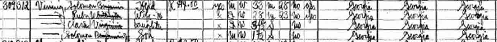
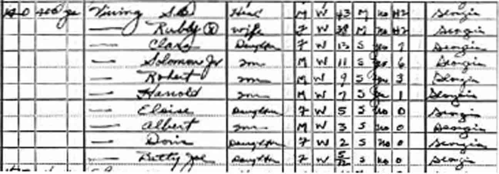
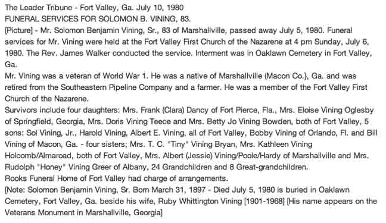

Census Data
| 1930 | 1940 | |
| Solomon Benjamin Vining | 33 | 43 |
| Ruby (Whittington) Vining | 28 | 38 |
| Clara Vining | 3 y., 10 m. | 13 |
| Solomon Benjamin Vining Jr. | 1 y., [7?] m. | 11 |
| Robert Gray Vining | 9 | |
| Harold Vining | 7 | |
| Eloise Vining | 5 | |
| Albert Edward Vining | 3 | |
| Betty Jo Vining | 5 m. | |
| Doris Vining | ||
| William Berner Vining |


Death Data
Obituary for Solomon Benjamin Vining: